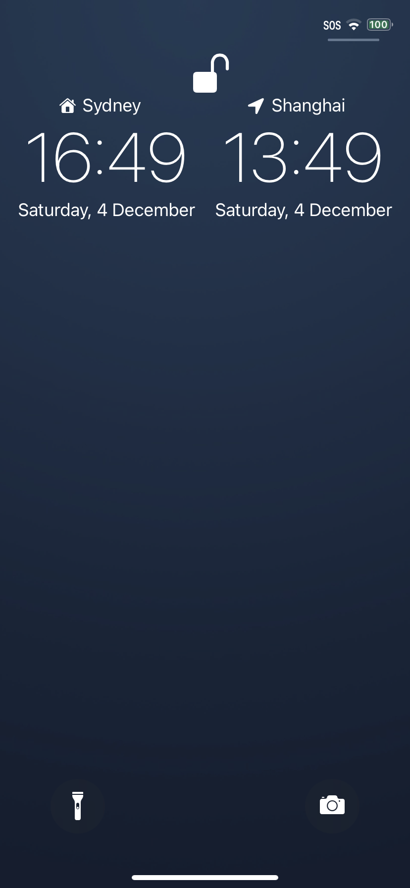
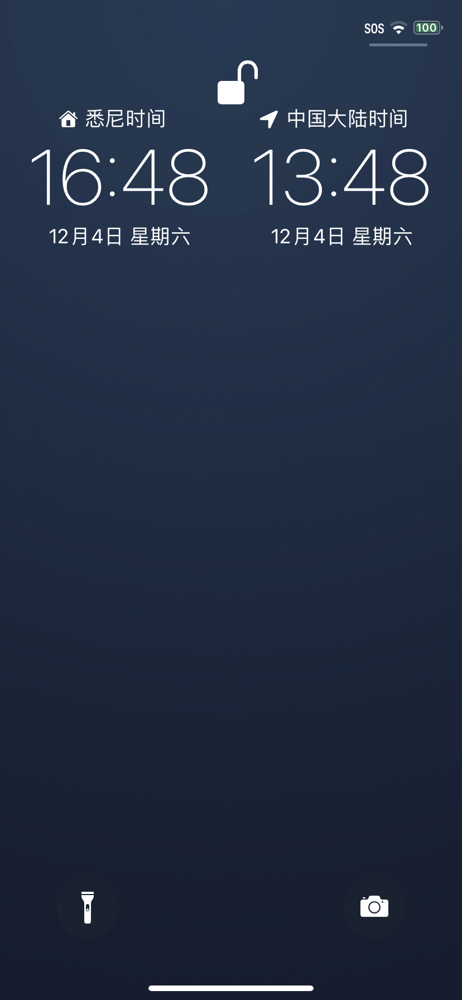
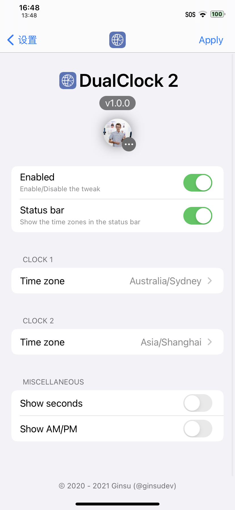
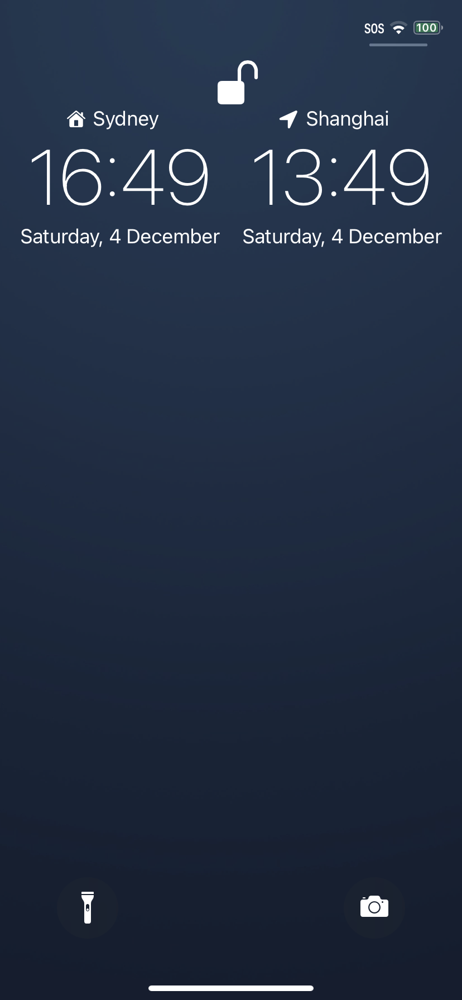
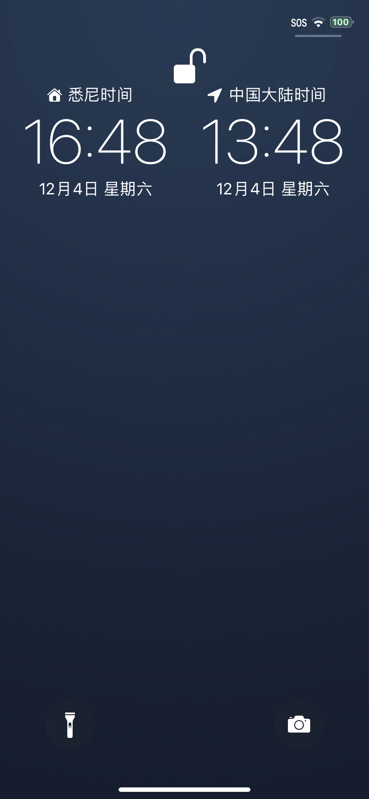
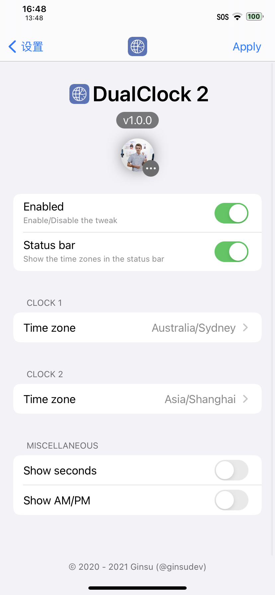

Twitter
DualClock 2
Ginsu
Compatibility: This package is compatible with iOS iOS 14.0 to 15.9.
 
Two time zones on the Lock Screen and in the status bar.
DualClock 2 is the successor to DualClock, re-written in Swift, bugs fixed and more intelligence. DualClock 2 allows users to show up to two different time zones on the Lock Screen and in the status bar. Supports iPad and iPhone.
Supports iOS 14+
Lower iOS versions have not been tested and may not work.
Contact
Information
Developer
Ginsu
Version
1.1.2
Compatibility
iOS 14.0 to 15.9
Section
Tweaks
1.1.2
- Improvements for the preferences page.
- Compiled with iOS 14.4 SDK.